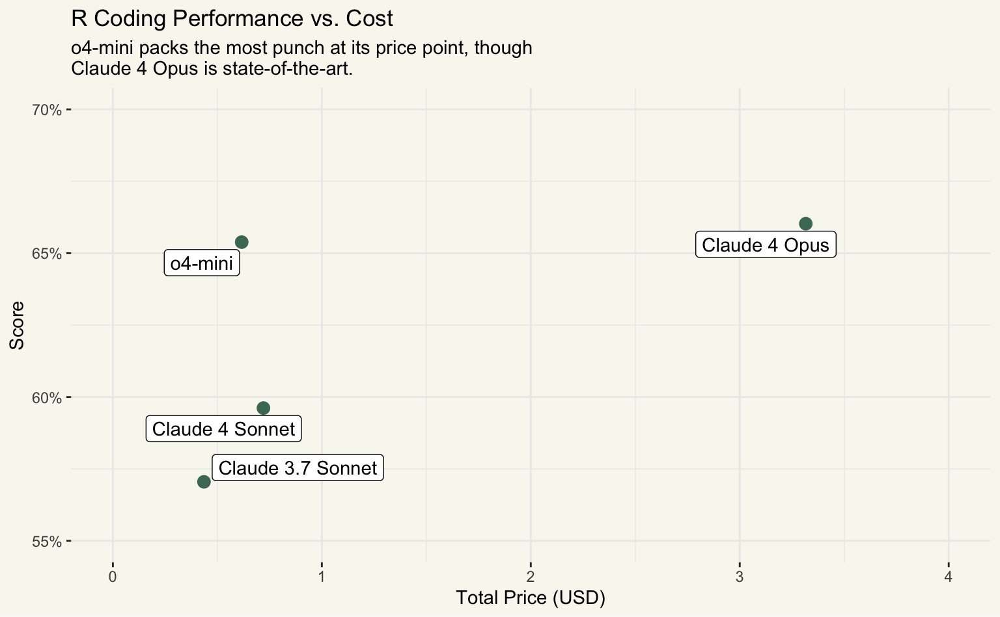

Claude 4 dropped on Thursday! Given that Claude 3.7 Sonnet is my daily driver LLM for R coding, I’ve been excited to poke at it.

The last few months, I’ve been writing a series of blog posts where I evaluate new LLM releases on their R coding performance. I do so entirely in R using the ellmer and vitals packages, the latter of which will be headed to CRAN in the coming weeks. In this post, I’ll skip over all of the evaluation code and just make some graphs; if you’re interested in learning more about how to run an eval like this one, check out the post Evaluating o3 and o4-mini on R coding performance.
Here’s the gist:
- An R Eval is a dataset of challenging R coding problems.
- We’ll run an evaluation on that dataset on Claude 4 Sonnet, Claude 4 Opus (which Anthropic made a point to note had impressive coding performance), Claude 3.7 Sonnet (my previous coding daily driver), and o4-mini (up to this point, the most performant model in this eval).
- Using the results, we can measure how well different models solved the R coding problems, how many tokens (and thus dollars) they used to get to those answers, and how long it took them to finish their answer.
Full evaluation code here
claude_4_sonnet <- chat_anthropic(model = "claude-sonnet-4-20250514")
claude_4_opus <- chat_anthropic(model = "claude-opus-4-20250514")
claude_3_7_sonnet <- chat_anthropic(model = "claude-3-7-sonnet-latest")
gpt_o4_mini <- chat_openai(model = "o4-mini-2025-04-16")
are_task <- Task$new(
dataset = are,
solver = generate(),
scorer = model_graded_qa(
scorer_chat = claude_3_7_sonnet,
partial_credit = TRUE
),
epochs = 3,
name = "An R Eval"
)
are_task
are_claude_4_sonnet <- are_task$clone()
are_claude_4_sonnet$eval(solver_chat = claude_4_sonnet)
are_claude_4_sonnet <- vitals:::scrub_providers(are_claude_4_sonnet)
save(are_claude_4_sonnet, file = "blog/2025-05-27-claude-4/tasks/are_claude_4_sonnet.rda")
are_claude_4_opus <- are_task$clone()
are_claude_4_opus$eval(solver_chat = claude_4_opus)
are_claude_4_opus <- vitals:::scrub_providers(are_claude_4_opus)
save(are_claude_4_opus, file = "blog/2025-05-27-claude-4/tasks/are_claude_4_opus.rda")
are_claude_3_7_sonnet <- are_task$clone()
are_claude_3_7_sonnet$eval(solver_chat = claude_3_7_sonnet)
are_claude_3_7_sonnet <- vitals:::scrub_providers(are_claude_3_7_sonnet)
save(are_claude_3_7_sonnet, file = "blog/2025-05-27-claude-4/tasks/are_claude_3_7_sonnet.rda")
are_gpt_o4_mini <- are_task$clone()
are_gpt_o4_mini$eval(solver_chat = gpt_o4_mini)
are_gpt_o4_mini <- vitals:::scrub_providers(are_gpt_o4_mini)
save(are_gpt_o4_mini, file = "blog/2025-05-27-claude-4/tasks/are_gpt_o4_mini.rda")You can view the raw results of the evaluation in this interactive viewer:
While the total durations of the evaluations are correct in the viewer, the timings of specific samples are now estimated. Given some changes in downstream packages, vitals has to estimate how long a given request takes rather than receiving the exact duration; this will be resolved down the line.
Analysis
At this point, we have access to are_eval, a data frame containing all of the results collected during the evaluation.
are_eval# A tibble: 312 × 5
model id epoch score metadata
<fct> <chr> <int> <ord> <list>
1 Claude 4 Sonnet after-stat-bar-heights 1 I <tibble>
2 Claude 4 Sonnet after-stat-bar-heights 2 I <tibble>
3 Claude 4 Sonnet after-stat-bar-heights 3 I <tibble>
4 Claude 4 Sonnet conditional-grouped-summary 1 C <tibble>
5 Claude 4 Sonnet conditional-grouped-summary 2 P <tibble>
6 Claude 4 Sonnet conditional-grouped-summary 3 C <tibble>
7 Claude 4 Sonnet correlated-delays-reasoning 1 P <tibble>
8 Claude 4 Sonnet correlated-delays-reasoning 2 P <tibble>
9 Claude 4 Sonnet correlated-delays-reasoning 3 I <tibble>
10 Claude 4 Sonnet curl-http-get 1 C <tibble>
# ℹ 302 more rowsThe evaluation scores each answer as “Correct”, “Partially Correct”, or “Incorrect”. We can use a bar chart to visualize the proportions of responses that fell into each of those categories:
are_eval %>%
mutate(
score = fct_recode(
score,
"Correct" = "C", "Partially Correct" = "P", "Incorrect" = "I"
),
) %>%
ggplot(aes(y = model, fill = score)) +
geom_bar(position = "fill") +
scale_fill_manual(
breaks = rev,
values = c("Correct" = "#67a9cf",
"Partially Correct" = "#f6e8c3",
"Incorrect" = "#ef8a62")
) +
scale_x_continuous(labels = scales::percent) +
labs(
x = "Percent", y = "Model",
title = "An R Eval",
subtitle = "Claude 4 models represent a step forward in R coding performance."
) +
theme_bw() +
theme(
panel.border = element_blank(),
panel.background = element_rect(fill = "#f8f8f1", color = NA),
plot.background = element_rect(fill = "#f8f8f1", color = NA),
legend.background = element_rect(fill = "#F3F3EE", color = NA),
plot.subtitle = element_text(face = "italic"),
legend.position = "bottom"
)The pricing per token of each of these models differs quite a bit, though, and o4-mini might use many more tokens during its “reasoning.” How much did it cost to run each of these evals, and what’s the resulting cost-per-performance?
The pricing per million tokens for these models is as follows:
# A tibble: 4 × 3
Name Input Output
<chr> <chr> <chr>
1 Claude 4 Sonnet $3.00 $15.00
2 Claude 4 Opus $15.00 $75.00
3 Claude 3.7 Sonnet $3.00 $15.00
4 o4-mini $1.10 $4.40 Under the hood, I’ve calculated the total cost of running the eval for each model using the shown pricing and joined it to the evaluation results:
costs Name Price Score
1 Claude 4 Sonnet 0.7204620 59.61538
2 Claude 4 Opus 3.3161850 66.02564
3 Claude 3.7 Sonnet 0.4359000 57.05128
4 o4-mini 0.6164763 65.38462ggplot(costs) +
aes(x = Price, y = Score, label = Name) +
geom_point(size = 3, color = "#4A7862") +
geom_label_repel() +
scale_y_continuous(limits = c(55, 70), labels = function(x) paste0(x, "%")) +
labs(
x = "Total Price (USD)",
y = "Score",
title = "R Coding Performance vs. Cost",
subtitle = "o4-mini packs the most punch at its price point, though\nClaude 4 Opus is state-of-the-art."
) +
lims(x = c(0, 4))
While Claude 4 Opus is the new SotA on this eval, o4-mini almost matches its performance at a small fraction of the price.
To determine if the differences we’re seeing are statistically significant, we’ll use a cumulative link mixed model:
summary(are_mod)Cumulative Link Mixed Model fitted with the Laplace approximation
formula: score ~ model + (1 | id)
data: are_eval
link threshold nobs logLik AIC niter max.grad cond.H
logit flexible 312 -205.43 422.85 234(1729) 7.06e-06 2.0e+01
Random effects:
Groups Name Variance Std.Dev.
id (Intercept) 13.56 3.682
Number of groups: id 26
Coefficients:
Estimate Std. Error z value Pr(>|z|)
modelClaude 4 Opus 0.6190 0.4126 1.500 0.134
modelClaude 3.7 Sonnet -0.3293 0.4115 -0.800 0.424
modelGPT o4-mini 0.5753 0.4236 1.358 0.174
Threshold coefficients:
Estimate Std. Error z value
I|P -2.25743 0.43244 -5.220
P|C -0.04208 0.48543 -0.087For the purposes of this post, we’ll just take a look at the Coefficients table. The reference model here is Claude 4 Sonnet. Negative coefficient estimates for a given model indicate that model is less likely to receive higher ratings than Claude 4 Sonnet. Looking at the coefficients, while Claude 4 Sonnet seems like an improvement upon its previous generation, we don’t see evidence of statistically significantly differing performance on this eval from Claude 4 Sonnet and any other model.
Thank you to Max Kuhn for advising on the model-based analysis here.